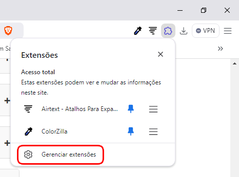
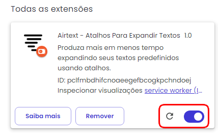

Ajuda
Problema de Funcionamento
Após realizar seu cadastro e inserir seus atalhos, a extensão deve funcionar normalmente, tanto para a digitação dos atalhos quanto para o menu do botão direito do mouse. Caso não funcione, certifique-se primeiro de ter realizado o login no app. Se estiver logado e mesmo assim não estiver funcionando, por qualquer motivo (o que não é normal), siga os passos abaixo e isso irá resolver.
1. No navegador, na parte superior direita, clique no ícone de quebra-cabeça: 2. Clique em "Gerenciar Extensões":
2. Clique em "Gerenciar Extensões":

3. Depois desligue e ligue novamente a extensão:
Além disso, após a instalação da extensão, é necessário recarregar as páginas que já estão abertas para receberem o sinal da extensão.
Como usar o Airtext
Atalhos bem elaborados podem aumentar a produtividade e garantir consistência, enquanto atalhos mal projetados podem levar a erros e ineficiência. Este guia ajudará você a criar atalhos que funcionem perfeitamente, tornando seu fluxo de trabalho digital mais rápido e fácil.
Como Criar Bons Atalhos Para um Expansor de Texto
Criar atalhos úteis requer alguma reflexão. Aqui estão alguns fatores-chave a serem considerados ao projetar atalhos que sejam rápidos de digitar e evitem erros inesperados.
1. O comprimento é importante: atalhos curtos versus atalhos longos
Embora os atalhos curtos sejam mais rápidos de digitar, às vezes eles podem levar a expansões acidentais. Por exemplo, se você definir "obg" para expandir para "Muito obrigado", a digitação será rápida, mas você poderá usar acidentalmente "obg" no meio de uma frase onde não desejava a expansão.
Regra prática: encontre um equilíbrio. Use atalhos curtos o suficiente para serem convenientes, mas exclusivos o suficiente para evitar acionamentos acidentais. Se um atalho for muito curto, considere adicionar uma letra ou caractere extra para torná-lo mais exclusivo (como "--obg" ou "@obg" em vez de "obg").
2. Comece ou termine os atalhos com um caractere especial
Terminar seus atalhos com um caractere especial, como ponto final, vírgula ou barra, é uma ótima maneira de evitar conflitos. Se o seu atalho for “addr-”, por exemplo, é improvável que você digite essa sequência acidentalmente na escrita cotidiana, o que a torna uma escolha segura. Adicionar um caractere especial sinaliza ao expansor de texto que o atalho está completo, portanto, há menos chances de ele substituir o texto acidentalmente.
Exemplo:
• Atalho incorreto: "casa" para seu endereço residencial (pode ser expandido sempre que você digitar "casa" em uma frase)
• Bom atalho: "casa//" ou "//casa"
3. Como lembrar seus atalhos
Depois de criar atalhos eficientes, o próximo desafio é lembrá-los. Aqui estão algumas maneiras de acompanhar:
• Agrupar por categoria: considere agrupar atalhos por categoria e usar padrões semelhantes. Por exemplo, todos os atalhos relacionados a e-mail podem terminar em “@” (como “trabalho@” para seu e-mail comercial) e todos os atalhos relacionados a endereços podem terminar com um hífen (“casa-”). Como alternativa, use as categorias do Airtext para organizar melhor seus atalhos.
• Mantenha a consistência: se você tiver um estilo específico, como sempre terminar os atalhos com um caractere especial, será mais fácil lembrar dos atalhos quando eles seguirem o mesmo padrão.
• Pratique regularmente: Pratique digitar seus atalhos para construir memória muscular. Quanto mais você os usar, mais naturais eles parecerão.
• Use o menu de contexto: o Airtext possui um menu que é acionado com o botão direito do mouse sobre os campos de texto onde você deseja inserir o atalho. Basta selecionar a opção "Airtext" nesse menu, que ela irá mostrar todos os seus atalhos (inclusive as catgorias) ordenados por título e o comando do próprio atalho.
Conclusão
Criar atalhos eficientes em um expansor de texto é uma maneira simples, mas poderosa, de economizar tempo e agilizar sua digitação. Ao usar atalhos longos o suficiente para evitar gatilhos acidentais e iniciá-los ou finalizá-los com um caractere especial, você pode garantir a precisão e evitar interrupções no seu trabalho. Com alguma configuração inicial e uso consistente, seus atalhos rapidamente se tornarão uma segunda natureza, aumentando sua produtividade e facilitando sua vida digital.
Dúvidas
Para qualquer tipo de dúvida sobre o Airtext, você pode entrar em contato conosco através do email landowskiapps@gmail.com.